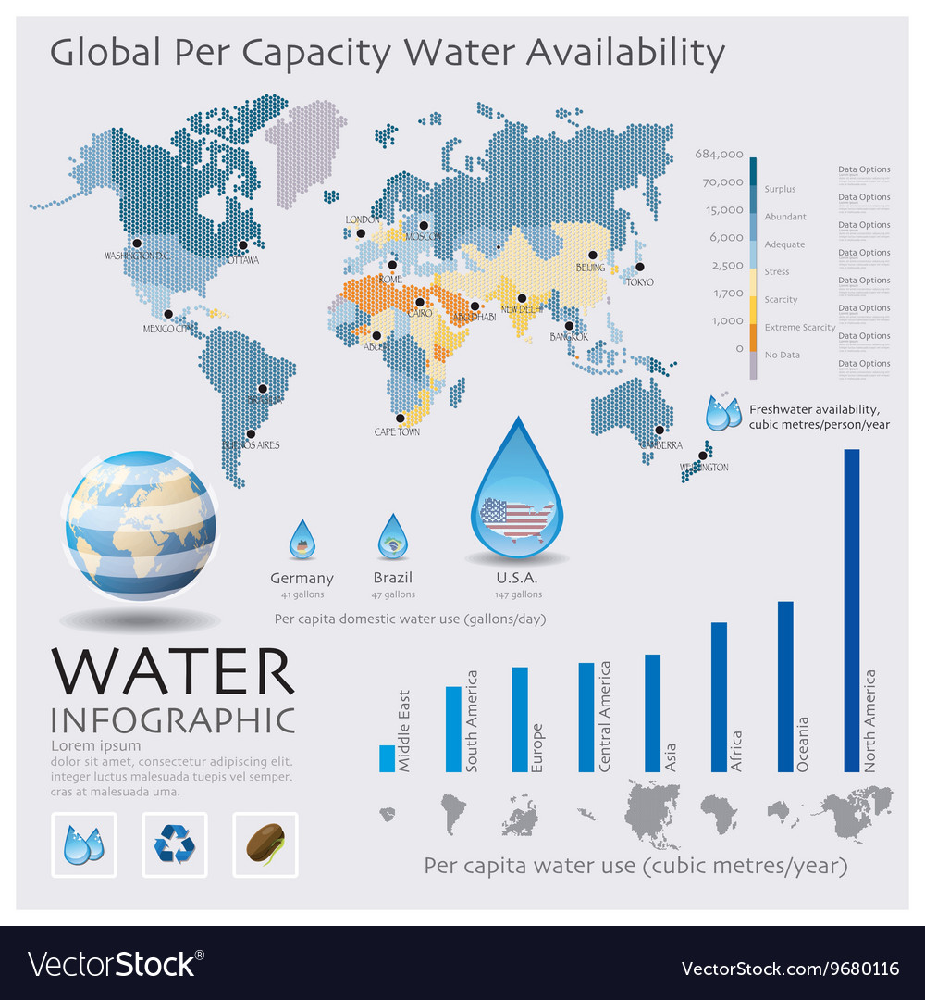
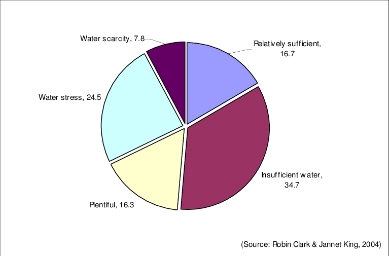
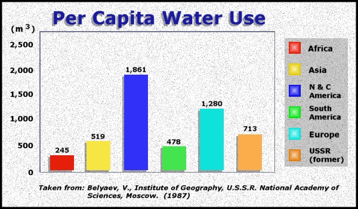

Emphasizing water conservation and efficiency measures is critical in mitigating water scarcity. Implementing water-saving technologies such as drip irrigation, rainwater harvesting, and greywater recycling can significantly reduce water wastage in agriculture, industry, and households. Promoting awareness campaigns to educate individuals and communities about the importance of water conservation further enhances efforts in this direction.
Explore practical and effective tips for water conservation in your daily life. Small changes in habits can lead to significant water savings. From optimizing household water usage to adopting water-smart landscaping practices, discover how you can make a meaningful impact.
Stay at the forefront of water management technology. This portal showcases the latest innovations that are revolutionizing the way we approach water scarcity. From smart irrigation systems to advanced filtration technologies, learn about the tools driving positive change.
Advocacy is a powerful catalyst for change. Discover the importance of policy reform in addressing water scarcity issues globally. Stay informed about current policies, and learn how advocating for sustainable water management policies can shape a more resilient future.
Explore ongoing projects and initiatives dedicated to water conservation and management. Learn from success stories around the world, and discover how local communities are taking action to ensure a sustainable water supply for their residents.
Use our interactive tools, such as the Water Footprint Calculator, to understand your individual impact on water consumption. Receive personalized recommendations for reducing your water footprint and contributing to a more sustainable water ecosystem.
Education is a key driver of change. Access a wealth of educational resources, including articles, videos, and infographics, to deepen your understanding of water-related issues. Stay informed and share your knowledge with others to create a ripple effect of awareness.
Discover opportunities to actively contribute to water conservation efforts. Whether through volunteering your time, skills, or resources, find ways to get involved and make a tangible difference in the communities that need it most.
Drowning is the third leading cause of unintentional injury death worldwide, claiming an estimated 236,000 lives each year.
Over 90% of drowning deaths occur in low- and middle-income countries, with children under the age of five at highest risk.
CDC collaborates with the CDC Foundation and Bloomberg Philanthropies on global drowning work to confront this vast problem.
Bloomberg Philanthropies launched its Global Drowning Prevention Program in 2012. CDC, the CDC Foundation, Bloomberg Philanthropies,
and other partners aim to adapt and improve local drowning prevention measures by collecting and analyzing data to understand the
specific causes of drowning.
In 2021, the World Health Organization declared July 25 each year as World Drowning Prevention Day, to highlight the tragic and
profound impact of drowning on families and communities and offer life-saving prevention strategies. This year, the WHO calls upon
individuals, organizations, and governments to “Do One Thing” to promote drowning prevention. In honor of that theme, the CDC Foundation
is recognizing World Drowning Prevention Day by sharing our collaborative work with Bloomberg Philanthropies, CDC, and in-country partners
through the Understanding and Preventing Drowning in sub-Saharan Africa, which is establishing major milestones in global drowning prevention
research in Uganda and Ghana.
Evidence-based prevention strategies like installing barriers around water sources, teaching water safety skills and implementing boating regulations have proven effective at preventing drowning. Before we can design, implement and monitor such strategies, it is crucial to understand the burden and circumstances surrounding drowning at a country level. However, with limited drowning data available in low- and middle-income countries, our understanding of contextual factors and impact of drowning is incomplete or misleading.
,
In 2018, the CDC Foundation and the U.S. Centers for Disease Control and Prevention (CDC) partnered with Makerere University School of Public Health researchers to identify fatal and non-fatal drowning cases in Uganda. Researchers collected administrative data from police offices, fire departments and mortuaries and conducted interviews with survivors, witnesses and family members for drowning cases that occurred between January 2016 and June 2018.
This study found that in 12 of the 14 study districts, the drowning death rate was higher than the WHO African
regional rate of 8.0 per 100,000 individuals.
Since 2020, the CDC Foundation and CDC have partnered with Kwame Nkrumah University of Science and Technology
to understand the burden and circumstances of drowning in Ghana. The study aims to: (1) establish the availability
of drowning data, (2) describe the burden of drowning including estimating a nationally representative drowning rate
, the first in sub-Saharan Africa, and (3) describe the circumstances of drowning in Ghana. These data will help identify key
risk factors of drowning–such as the ages and sexes of victims, whether the incident was flood related and if there was a rescue
attempt made by authorities or witnesses–to inform appropriate prevention and intervention strategies. Data collection for the
study, which also examines the activity at time of drowning, life jacket use, swimming skills and boating-related information,
will continue through December 2022.
Drowning is a preventable tragedy that
requires more global attention. By bolstering
data availability and establishing contextual
understandings we can prevent thousands of lives
lost to drowning each year. To learn more about
current global efforts to prevent drowning, visit
WHO’s World Drowning Prevention Day 2022 website.
The CDC Foundation encourages you to take part
in this year’s World Drowning Prevention Day
and identify the one thing you can do to help prevent drowning around the world.
1.The world map of water availability infographic Vector Image
2. Percentage of the world's population with different water availability...
3. Data - Availability of Water
4. global per capita water avialability